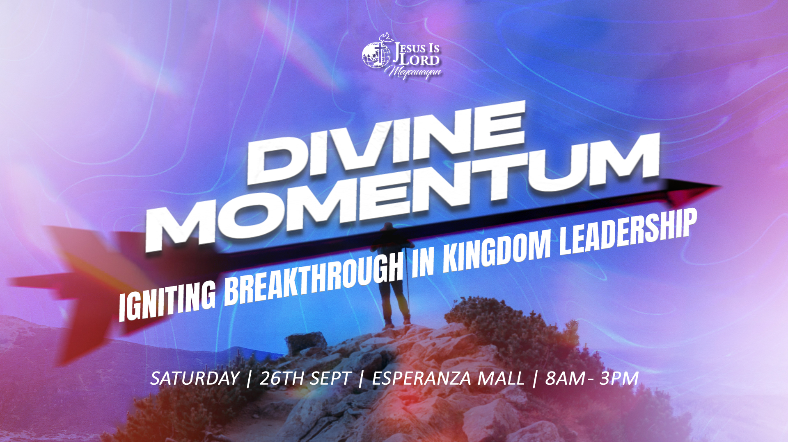

Mabuhay! I'm
I am Juan Sotto, a second-year Multimedia Student at the University of the Philippines Open University. I live in the City of Meycauayan, Bulacan. Being part of the Multimedia Arts Network Ministry at my church has planted a seed of creativity in me, allowing me to explore my inner world through editing pubmats and videos. Yet, my passion for creativity goes beyond digital art. I am also a worship leader at church; I love listening to Hillsong, and it pushes me to involve myself in theatrical acts as well, exploring other forms of creative expression.
These are some of my passion projects that I recently worked on:
